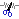

Edit Toolbar
From Audacity Manual
- Click on the toolbar image below to see this toolbar displayed in context of the default upper tooldock layout.
The above image shows all buttons active in order to display them more clearly. However in a new project with no audio present or selected, only the Sync-Lock Tracks button would be bold (active).
 Cut or CTRL + X
Removes the selected audio data and/or labels and places these on the clipboard. By default, any audio or labels to right of the selection are shifted to the left.
Copy or CTRL + C
Copies the selected audio data and/or labels to the clipboard without removing these from the project.
Paste or CTRL + V
Paste either inserts the clipboard contents at the position of the selection cursor, or replaces a selected area with the clipboard contents.
Trim Audio or CTRL + T
Trim Audio deletes all audio but the selection. If there are other separate clips in the same track these are not removed or shifted unless trimming the entire length of a clip or clips. Does not affect label tracks.
Silence Audio or CTRL + L
Silence Audio replaces the currently selected audio with absolute silence. Does not affect label tracks.
Undo and CTRL + Z
Reverts the last editing operation. Audacity supports unlimited "stepwise" undo. This means you can undo every editing operation back to the last time the project was opened, but you can't undo one particular edit without also undoing any changes made after that edit. You can review your editing history and jump straight back to any particular edit point at .
Redo or CTRL + Y (on Mac SHIFT + CTRL + Z)
Restores the previous editing operation that was just undone. Note: If you undo an operation then perform any new one that appears in the Undo History, you can no longer redo that undone operation.
Sync-Lock Tracks
Enables the Sync-Locked Track Groups feature. This ensures that length changes occurring anywhere in a defined group of tracks also take place in all audio or label tracks in that group, even if those tracks were not selected. This lets you keep existing audio or labels synchronized with each other, even when carrying out actions like inserting, deleting or changing speed or tempo. You can turn this feature "on" or "off" (default is "off") by clicking this button to highlight it.
 Zoom In or CTRL + 1
Zoom In or CTRL + 1
Zooms in to a higher magnification level. You can continue to zoom in until you reach the level of displaying individual audio samples.
Zoom Out or CTRL + 3
Zooms out to a lower magnification level. You can zoom out so far as to fit 228 hours of audio on the screen.
Zoom Selection or CTRL + E
Zooms a selection region in or out so that it fits in the available horizontal window area. The button is therefore grayed out unless a selection region is made.
Fit Project or CTRL + F
Zooms in or out so that the entire audio of the project fits in the available horizontal window area.